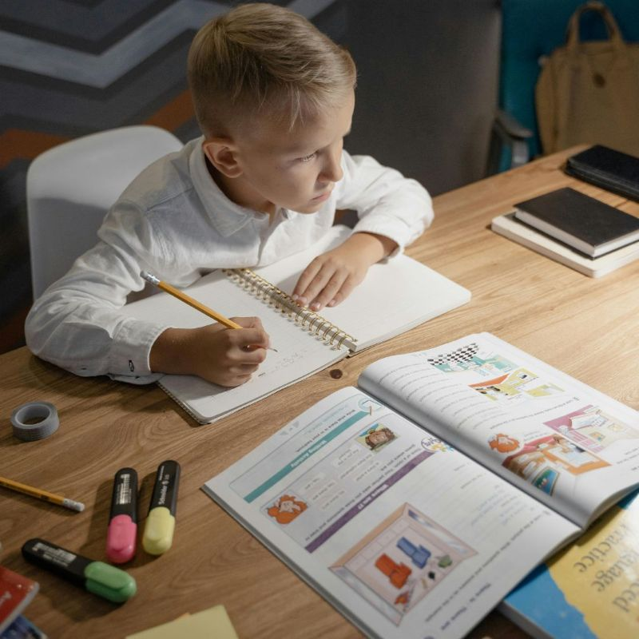
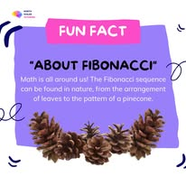
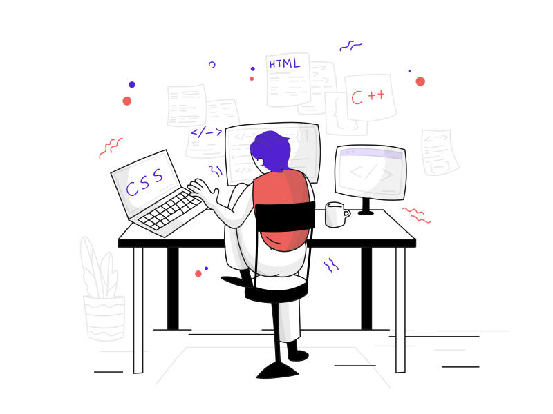

.png)
Subject plus level searches
Pages such as GCSE Maths tutor Cumbria, GCSE Science tutor Cumbria and A-Level Chemistry tutor Cumbria answer exactly what the parent is looking for.
online tutors Cumbria
Find an online tutor for a child in Cumbria. Named tutors, clear prices, GCSE, A-Level, SATs, KS3, Maths, English and Science support with a managed matching route.
Parent route
Support is organised around the routes Cumbria families most often need: GCSE tuition, tutors in Carlisle, SATs support, KS3 help, GCSE Maths, GCSE Science and A-Level subject support.
High intent search routes
Rather than sending every parent through the same generic page, the site now gives each major search a useful destination: GCSE Maths, GCSE Science, SATs, KS3, A-Level subjects, Carlisle tutors and online tutoring across Cumbria.
Pages such as GCSE Maths tutor Cumbria, GCSE Science tutor Cumbria and A-Level Chemistry tutor Cumbria answer exactly what the parent is looking for.
Carlisle, Kendal, Penrith, Barrow, Workington and Whitehaven routes explain how online tutor matching helps families in each area.
Mock exam recovery, Year 11 Maths, exam technique and resit pages capture parents who are not just browsing, but trying to solve a pressing problem.
High-value routes





Why online can win in Cumbria
Cumbria is geographically spread out. A purely local search can limit the number of suitable specialists, especially for A-Level Maths, Physics, Chemistry and specific GCSE gaps. Cumbria Tutoring uses online lessons so families can access a wider tutor pool while still being served by a Cumbria-focused website.

Tutor pool
The tutor pool is shown directly because parents should be able to see subjects, levels and prices before enquiring.

Qualified Maths and Further Maths tutor
Best when a student needs patient explanation, stronger written working and structured exam practice.

Maths and Further Maths tutor
Best when a student needs challenge, depth, A-Level preparation or confidence with multi-step questions.

Maths and Science tutor
Best when a student has topic gaps in Maths or Science and needs exam-style practice.

Science, Biology and Maths tutor
Best when Science needs to be explained in plain English and then linked to mark schemes.

Science, Maths and English tutor
Best when a family wants one tutor who can help with more than one core subject.

Maths, English and Science tutor
Best for younger learners, foundation support and students who need patient confidence building.
Useful parent guides
Ready to narrow the search?
Send the student year group, subject, weak topics and availability. We can then point you towards the most sensible tutor route.
Parent decision route
A strong enquiry should quickly move from broad concern to a focused plan. This section helps parents understand what we need, how the tutor uses it and why the lesson route is more useful than simply booking a random tutor.
We ask for the year group, subject, exam board if known, weak topics, recent marks and target outcome so the support starts with the actual problem.
The tutor suggestion is based on subject, level, teaching style, availability and whether the student needs confidence, challenge, exam technique or catch-up support.
Lessons usually combine explanation, guided practice, independent attempts and feedback, with more past-paper work as exams get closer.